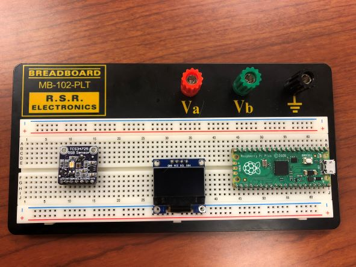

Week 8: Detect the Color of M&Ms#
Laboratory 5
Last updated Jan 5, 2023
00. Content #
Mathematics
3 dimensional vectors
Euclidean distance
Programming Skills
Modules
Embedded Systems
Thonny and MicroPython
0. Required Hardware #
Raspberry Pi Pico
Breadboard
RGB color sensor (TCS3472)
OLED display
Write your name and email below:
Name: me
Email: me @purdue.edu
You may work in groups of 2-3 for this lab.
Groupmate(s):
1. RGB Color Sensors #
We’ve done a lot of theoretical work about color from learning about tristiulus vectors and metamers, but now let’s investigate a use for the RGB color space. The TCS3472 sensor we will be using can detect color and returns an RGB value. The sensor contains an infrared (IR) blocking filter for increased accuracy. IR light is light that has wavelengths of 800-1000 nm; it is invisible to us since humans only percieve wavelengths in the 400-700 nm range. If you want to learn more about this sensor, download TCS34725.pdf.
2. The Screen #
I2C#
Usually a modern electronic device will consist of a microcontroller (such as the Raspberry Pi Pico) and several peripherals. Peripherals are what we call any component the microcontroller is “in charge” of. The two main peripherals we will be using in our inclinometer are a screen and an accelerometer. You might call the button a peripheral, but usually the word peripheral refers to components which do something on their own, while communicating with the microcontroller.
One of the most popular ways for a microcontroller to communicate with a peripheral is using a protocol called the Inter-Integrated-Circuit protocol. Its name is usually abbreviated, either as IIC, I²C, or simply I2C. These are pronounced as “eye-eye-see”, “eye-squared-see” or “eye-two-see” respectively. I2C uses two wires, one called Serial Clock (abbreviated as SCL) and the other called Serial Data (abbreviated SDA). One of the brilliant things about I2C is that every I2C peripheral has its own identification number, so when a message is sent using the I2C protocol it can have a label saying “who it is for”. That means you can have several different peripherals all connected to the same two wires – potentially connecting dozens of peripherals to a microcontroller using only two wires (assuming none of the devices share an identification number). Since many devices are sharing the same connection an I2C connection is called a “bus”, from the Latin Omnibus which means “for everyone”. I2C is an example of a serial communication protocol, because bits of data are sent one after another (in a series) over relatively few wires, instead of all-at-once over relatively many wires. You have already heard of, and used, another serial bus protocol – the so-called Universal Serial Bus, usually abbreviated as USB.
The Raspberry Pi Pico has two I2C busses, numbered 0 and 1. You can see which pins they are connected to on the Pico’s datasheet; for example, to use I2C bus number 0, you can use any of the GP pins labeled as I2C0 SCL and I2C0 SDA. You might choose GP pins 20 and 21, or 12 and 13, or 4 and 5 for a few examples. When you set up an I2C bus, you will have to choose a frequency for it to use. This is a fairly straightforward decision. The valid choices of frequency are 100,000; 400,000; 1,000,000; 1,700,000; and 3,400,000 Hertz. If you use a higher frequency then your system will run faster and consume more power. Higher frequencies might not work, depending on several factors such as how long your wires are and how much electromagnetic interference they experience. Also, some peripherals are not compatible with higher frequencies. In a situation like ours, where we are not particularly concerned with power consumption, it makes sense to choose the highest frequency possible so that your system runs faster.
{kind=link}
Exercise 1 #
Referencing the Pico’s datasheet, answer:
how many pairs of GP pins use I2C bus number 0?
how many pairs of GP pins use I2C bus number 1?
Write Answers for Exercise 1 Below
The framebuffer#
On the hardware side, we interact with the OLED display using I2C. In software, the interface we will use is one of the interfaces built into Micropython: the frame buffer interface.
It’s called a frame buffer because when interacting with it, you make most of your changes in an array called a buffer, stored on the Pico. We only send data to the display when we call the function show(), as a complete frame ready to display. This way, we are using the I2C bus as little as possible, freeing up time for other peripherals to use the I2C bus.
The documentation for the frame buffer interface is part of the Micropython documentation. There you will find functions for drawing lines, rectangles, and text, as well as a function for writing to individual pixels.
2. Make an M&M Sorter #
Wiring Instructions#
Please make sure your microcontroller is not plugged to the computer while you are wiring things together. Ask the instructor if you are unsure about your wiring.

Pictured from left to right is the RGB color sensor, the OLED display, and the Pico.
Use jumper wires to make the following connections.
OLED |
Pico |
|---|---|
GND |
GND |
VCC |
3V3(OUT) |
SCL |
I2C0 SCL or I2C1 SCL |
SDA |
I2C0 SDA or I2C1 SDA |
TCS34725 |
OLED |
|---|---|
GND |
GND |
VIN |
VCC |
SCL |
SCL |
SDA |
SDA |
TCS34725 |
Pico |
|---|---|
LED |
any GP pin |
Make sure tcs34725.py and ssd1306.py are stored on the Pico.
Before you run the example file
example.py you will need to change the code based on the I2C bus and GP pin you chose for the sensor’s LED while wiring. The first line of the function main sets up the I2C bus according to whichever specific SCL and SDA pins you are using – remember to use the number labeled with GP on the datasheet, and set the id according to whether you are using I2C bus 0 or 1.
Exercise 2 #
It’s been debated whether different color M&Ms taste different. Whether this is a physocological phenomenon or not, let’s say you have a friend who is color blind who wants to test this theory themselves, but it’s a challenge to sort red from green from brown M&Ms. To solve this critial problem, your goal is to create an M&M sorter using your Pico and the TCS3472 color sensor. Connect the color sensor and an OLED display to your Pico. When you hold up an M&M to the sensor, the screen should display the name of the color of the M&M. To display the name of the color, you will have to play around with the color detection a bit to see what values generally are detected for each color. As a suggestion, it’ll be easier to read and manipulate your code if you make use of modules. Remember that NumPy is not part of MicroPython.
Hint: One method is to use the distance between the RGB vector output and “target” colors to detect red, blue, etc.
Part 1
Describe in a paragraph or two how well your M&M sorter works. What problems arose and were you able to resolve any of them?
Write Answers for Exercise 2 Part 1 Below
Part 2
Display all code you wrote either by copying and pasting or reading in and printing Python file contents.
Write Answers for Exercise 2 Part 2 Below
Reflection #
1. What parts of the lab, if any, do you feel you did well?
2. What are some things you learned today?
3. Are there any topics that could use more clarification?
4. Do you have any suggestions on parts of the lab to improve?